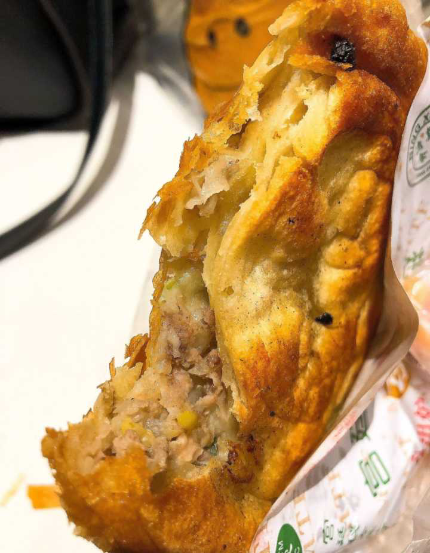

Linda

一大早从汉口专程到水路街拔草。阿斌豆皮没开门 [撇嘴],隔壁青山罗氏的面窝，李记的秘制牛肉粉吃完，就晃到了网红店龙班长蹄膀大王。店面很小但还干净。蹄鶻、蹄花、小黄鱼各买了- -些。回去吃了喜欢蹄花和小黄鱼[呲牙]。下回有机会去阿斌家吃豆皮的时候，有必要再到龙班长那买点蹄鶻和小黄鱼[呲牙]。

猫猫虫
一人食，美滋滋~

好吃不如你1993
晚上自己做了顿卤煮火烧，倍儿香~ 自己烙的死面火烧，外面很少有卖死面火烧的，只好自己动手。 大肠和肺头是从稻香村买的熟食，省事。自己回来再进行炝锅+各种佐料熬炖，配上韭菜花、酱豆腐、蒜汁、香菜、小香葱，香喷喷热乎乎的一碗卤煮火烧进肚了，味道老香了~
o不列颠呆毛王o

自己琢磨了一道“香料黄油烤鸡腿配蔬菜”。分享给你们!（嘿哈） 亮点在于把自己喜欢的香料加入黄油中搅拌均匀，然后把黄油塞进皮与肉之间进行烤制（注意不要把鸡皮弄破了） 我这里在黄油里加了黑胡椒、海盐、自制辣椒面、百里香、白葡萄酒、橄榄油、薄荷叶； 烤制温度上下火200度，中层正反面各13分钟后再放到上层两面各五分钟； 配菜就直接放在烤盘里撒上海盐黑胡椒和鸡腿一起烤就ok。

我的马鸭
救救孩子!双喜铁板烧!太太太好吃了吧!虽然排队一个多小时，但是好吃啊，便宜，量大，大家一定去了先叫号再点菜,不然像我一样，等了好久好久好久啊
Finalfantasy

光谷一0八抹茶茶廊好吃不贵，良心安利。8块钱一个，买二送一，16元买了三个还挺划算的~原味抹茶红豆卡仕达的最好吃! !红豆沙和抹茶中和的刚刚好，不甜不腻~ 他家的抹茶卡仕达不算很甜，后味能感受到苦味，还挺喜欢的~只是我一一个人吃了三个还是有点腻... 下次来试试饮品和冰淇淋,看起来不错的感觉~

小黄鸡永不为奴

桌上的橘子 晴天的光影 每一点都恰到好处 刚刚好合心意
Anywei

一个人泡在了coffee「set up」 出门喝的最后一杯咖啡 意外好喝

宛宛在沉思
「黑月亮COFFEE」 店里的布置挺有意思的，但这不是重点 重点是店里的手冲很赞，豆子很新鲜老板手很稳 老板说怕给我冲得味道重了，但是我就很喜欢焦苦的味道hhhh 即使一个人来也不会感到孤单。

点击头像收获快乐
自创西兰花圣诞树~
1.材料：西兰花，胡萝卜，小番茄
2.辅佐材料：盘子，竹签，剪刀，小装饰品（随便你有啥装品都可以随意搭配）
3.步骤：西兰花洗干净沥干水分用剪刀剪成一朵一朵，分成大朵和小朵各一盘（备注大朵西兰花用于底部，小朵西兰花用在顶部），小番茄洗干净沥干待用，胡萝卜洗干净沥干，用刀头部切平直放在盘子上，用牙签固定好西兰花跟小番茄，最后把装饰品摆放好。
来动手试试吧~

铁罐儿呢
份量咸淡刚刚好，是怀旧的味道。☞郑伯伯面馆

唯怡milky
